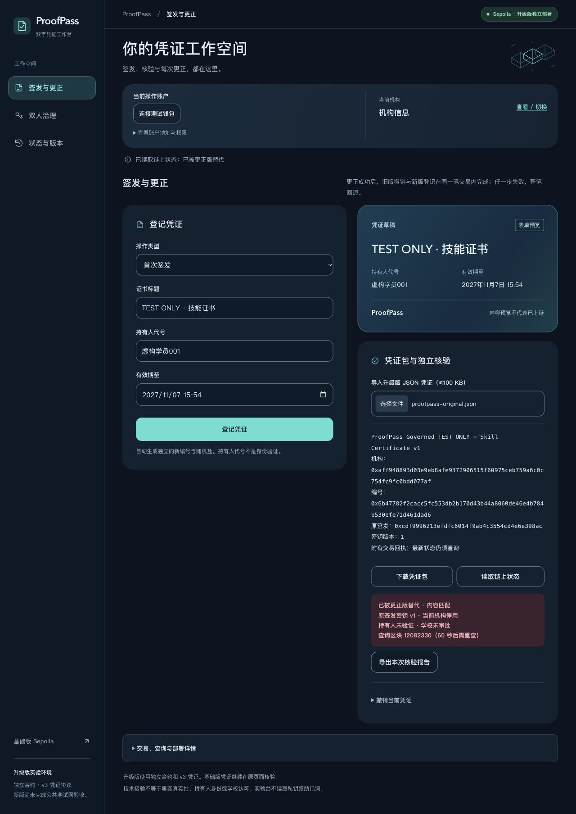
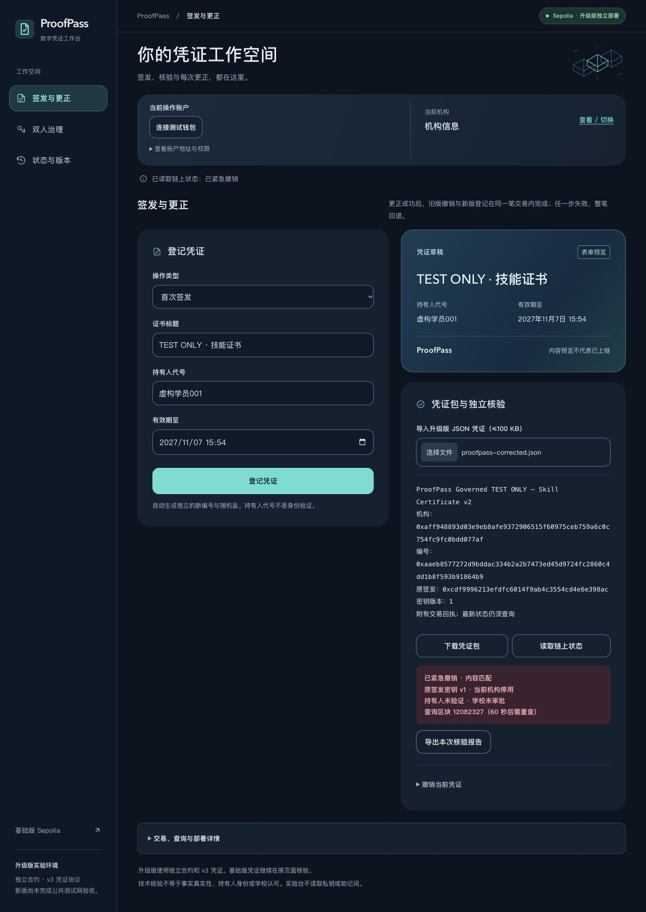
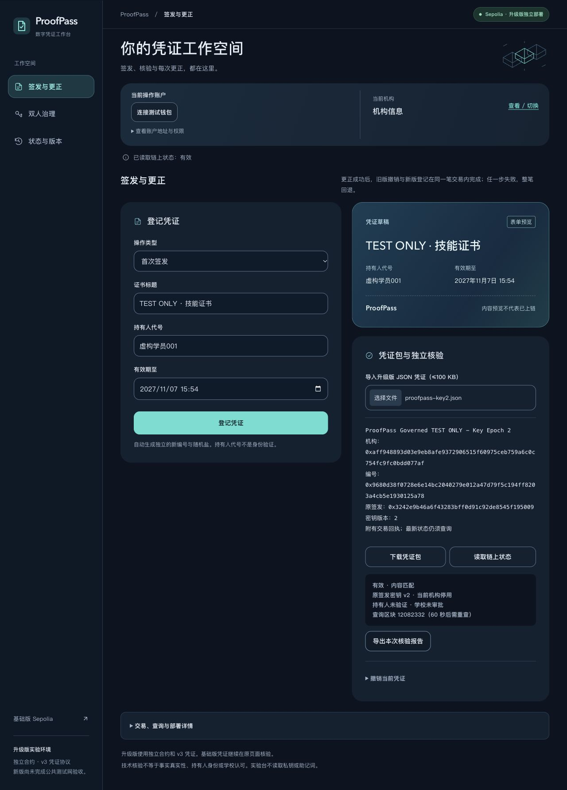

报告查询：2026-11-07 15:57:44（北京时间）
原版：已被替代
内容匹配 · 技术核验不通过
查询区块 12082330
问题与结论 · 竞赛获奖与技能证书跨校核验
接收学校要判断的不只是“文件有没有改”，还有“谁签发、是否仍有效、谁有权更正”。ProofPass 将技术核验与学校审批分开。
学生提交 → 学校核对 → 原机构确认。等待时间、返工频率与实际痛点，仍需真实访谈和计时验证。
公共测试网有真实交易；独立浏览器可读取凭证状态。演示证书及持有人均为虚构 TEST ONLY。
存在共同可信的管理方时，中心化签名库更直接；多方需要共同审计且治理可落地时，再考虑共享账本。
流程与三方案
| 方案 | 适用条件 | 主要代价 / 未解决问题 |
|---|---|---|
| 现有流程 人工 + 官方渠道 | 官方查询已覆盖、低频申请、原机构可响应。 | 逐项核对和跨机构联系；不同类型证书的查询入口不统一。 |
| 中心化签名库 共同可信的管理方 | 机构接受同一平台管理；可明确数据责任与服务承诺。 | 需维护统一入口、权限和审计；依赖平台可用性。 |
| 多方共享账本 共同记录状态变更 | 多方不愿单方控制记录，并愿意共同承担治理成本。 | 密钥、准入、纠纷和隐私仍要制度解决；交易与运维增加成本。 |
最小链上数据和治理
记录签发密钥及版本、时间、撤销状态、前后版关联；治理提案保留投票与原因摘要。承诺绑定链、合约和凭证内容。
正文与随机盐保存在凭证包，持有人按需提供；身份与审批另行审核。公开哈希不等于匿名，凭证包也需保护。
当前运行于 Sepolia 公共测试网，未建设校园联盟链节点。
机构当前密钥负责业务写入；治理操作固定 2/3 门槛。
一笔交易替代旧版并登记新版，双向关联，历史不覆盖。
两票批准后执行；可轮换或停用机构密钥。
争议由线下规则处理；两票可紧急撤销指定凭证，留原因摘要。
测试网真实成果
两票准入 → 签发 → 原子更正 → 密钥轮换 → 新密钥签发 → 停用 → 紧急撤销；IAB 未连接钱包完成独立导入与报告导出。

内容匹配 · 技术核验不通过
查询区块 12082330

内容匹配 · 技术核验不通过
查询区块 12082327

内容匹配 · 技术核验通过
查询区块 12082332
现场演示与证据
区分内容是否变化、记录状态、学校是否认可；不将痛点假设当成实测。
主网页“03 · 文件指纹”：先比较同一文件，再换成改动一个标点的样例，解释 SHA-256 与本机计算时间。
展示原版被替代、更正版紧急撤销、新密钥凭证有效；指出报告日期、区块和下载入口。
解释 2/3 权限、同机三钱包边界；技术状态不代替身份与学校审批，不为上链而上链。
停止切页，两名非组长成员按提问回答；每人都应会操作、读证据并讲清限制。
不能。摘要比较的是字节，重存或扫描也会改变字节；它不证明获奖事实或持有人身份。
停用阻止新的业务操作；历史凭证是否有效要逐张判断。
不等于。它们在同一设备上，仅验证 2/3 阈值和权限逻辑。
主流程离线可做，不依赖现场 RPC 或发交易。可选联网复查用 :8080/upgrade/；失败即回到历史报告。:8081 是本机临时链。
适用边界
参与者的三方案公平比较；持有人身份与学校接入；独立组织部署、密钥保管及治理轮换。
成员与分工：____________________________ 真实访谈与现场材料：由团队自填并核实。
人测模拟数据不得计入真实样本；技术截图不得替代团队现场照片。